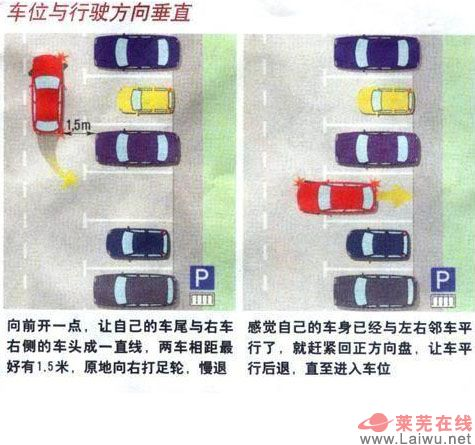

安全
特别注意
-
车辆在熄火的状态下，刹车和方向很不灵活，因为转向助力
器和刹车助力器需要发动机提供动力。
-
对于电喷发动机，空挡滑行并不省油。
-
下坡一定不能空挡滑行。
-
正常行驶时，驾驶人的左右手分别放在转向盘上相当于时钟9点
和3点的位置，这样在安全气囊炸开后双手会自然向两侧弹开。
开车禁忌
-
不要穿高跟鞋或拖鞋开车。
-
不要把手机摆放在仪表盘附近的储物格。
当车辆被追尾时会对司机造成伤害。
-
不要在胸口佩戴挂件。
当气囊弹出时佩戴在胸口的饰品会对司机造成伤害。
-
佩带安全带。
急刹车或发生碰撞时，人会被甩出去。
-
不要在安全气囊上摆放任何物品。
当气囊弹出时，对人体产生巨大压力，安全气囊上的物品
会对人体造成严重伤害。
-
不要任由长发摆动。
飘逸的长发在驾驶时会影响司机的视线。
-
不要在开车的时候打电话。
-
不要单手控制方向盘。
在遇到突发情况时，不易控制车辆。
-
不要在车里摆太多装饰件。
影响视线。
基本常识
-
后视镜调节
-
中央后视镜：
左右位置调整到镜面的左侧边缘正好看到自己的右侧耳朵。在一般
驾驶情况下，在镜面中看不到自己。上下位置则把远处的地平线置于
镜面中央。
-
左侧后视镜：
上下位置是把远处的地平线置于中央，左右位置则调整至车身占据镜面
范围的1/4。
-
右侧后视镜：
上下位置是地面面积约占镜面的2/3（路边停车的需要），左右位置调整
到车身占1/4面积。
-
视野盲区
-
车外"移动"的视线盲区。
-
高架桥桥墩遮挡视线，桥墩后面可能突然跑出一个人。
解决办法：在有选择的情况下，尽量不要走最靠近桥墩一侧的车道，
尽管那条车道往往是最为通畅的。特别留意桥墩附近的路况，如需左拐
或者掉头，要注意控制车速，并与前车保持足够距离，以防前车突然
急刹造成追尾。
-
前方的大货车、公交车挡住了视线（如红绿灯、行人）。
解决办法：在接近路口时，与前面大客车保持足够距离，尽量保证能
清晰看清前方的交通指示灯。在不确定的情况下，降低车速，看清信号灯
后再通行。
-
在等红灯时，两侧的大公交车挡住了两侧的视线，看不到过马路的行人。
很多行人往往在人行道绿灯即将结束时，做最后的冲刺。
解决办法：让两侧的大车先起步，待它们通过了斑马线后再起步。
-
当车辆爬行在陡峭的山坡，车辆到了最高点的时候，这时驾驶员的视线会
离开路面，造成视线盲区，假如没有对迎面而来的车辆做出避让，往往会
造成交通事故的发生。
解决方法：爬行在陡峭的山坡时，车辆尽量靠外侧行驶，当视线离开路面
时，需要鸣喇叭，引起来车注意。
-
当车辆在路上行驶时，旁边的建筑物、路边的植物、旁边的汽车阻挡了
视线，或者由于公路线形遮挡了视线。
解决办法：转弯时提前打转向灯并鸣喇叭，降低车速靠外侧转弯。
切记不能高速转弯与靠内侧行驶。
-
车内"固定"的视线盲区。
市内开车注意事项
-
在前方有岔路口，或者小岛时注意有电动车或行人突然出现。
-
尽量在行车道行车，如4车道中间的两个车道。
-
在拥堵路段转弯要提前变道。
-
每到一个路口或巷口前应注意从里面钻出来的车和人。
-
如果长时间红绿灯等待，应挂在空挡，踩住刹车，因为离合
不易踩太久，容易磨损。
-
一走一停的堵车应先踩离合再刹车。
-
遇到老人小孩过马路，提前减速待通过。
高速注意事项
-
避免在冰雪天、雾天、雨天、夜间上高速。
-
出行前，应先了解出入口，避免临时找出入口，一但开过头，
千万别倒车，要开到下个出口下去，再上来。
-
进服务站或下高速的时候，最好看一眼速度表，因为高速跑久了
会对速度表有误差。
-
别让大车特别是集装箱跟在自己身后，那些车刹车多半不好使。
-
超车要迅速，尽量避免并行时间。
-
跟大车一定要保持车距，防止大车突然变线，爆胎和掉物。
-
切记严禁猛打方向盘。
-
见到前面路面上有水什么的千万别大意，没准儿是油，应尽量
减速，松油门通过。
-
高速行驶时，注意方向盘要稳握轻打。
-
出口前要把车速降到40公里以下。
恶劣天气行车注意事项
-
雾天：开灯、低速、保持车距
-
能见度小于500米大于200米时，必须开启防眩目近光灯、示廓灯和前后位灯；时速不得超过80公里；与同一车道行驶的前车必须保持150米以上的行车间距。
-
能见度小于200米大于100米时，必须开启雾灯和防眩目近光灯、示廓灯、前后位灯；时速不得超过60公里；与同一车道行驶的前车必须保持100米以上的行车间距。
-
能见度小于100米大于50米时，必须开启雾灯和防眩目近光灯、示廓灯、前后位灯；时速不得超过40公里；与同一车道行驶的前车必须保持50米以上的行车间距。
-
能见度小于50米时，公安机关依照规定将采取局部或全路封闭高速公路的交通管制措施。实施高速公路交通管制后，除执行任务的警车和高速公路救援专用车辆外，其他机动车禁止驶入高速公路。此时已进入高速公路的机动车辆，驾驶员必须按规定开启雾灯和防眩目近光灯、示廓灯、前后位灯，在保证安全的原则下，驶离雾区路段，但最高时速不得超过20公里。
-
冰雪路面：多换挡、少制动、加大车距、心别慌
-
沿着前车的车辙行驶。
-
一般情况下，不要超车、急减速、急转弯和紧急制动，
需要停车时，要提前采取措施，必要时可以利用发动
机的转速来控制车速，多换挡，少制动。
-
当前轮滑溜，应及时松开刹车修正方向。
-
当后轮滑溜，应向滑溜一方修正方向盘。
-
当遇动力滑溜应及时抬起加速踏板。
-
当遇横向滑溜汽车进入旋转状态时，不要慌乱采取措施，
等汽车停稳后重新起步。
-
强风：紧握、轻打方向盘
-
重量轻的小汽车，容易受到横风的影响。
-
横风的作用是随车速的提高而加剧的。
-
汽车从隧道驶出的瞬间，或驶向风力贯穿的桥梁、高路堤
等路段时，往往会突然遭到强横风的袭击。
-
遇横风时驾驶员应当降低车速，握紧方向盘；发现车辆偏
移时，应微量转动方向盘，矫正行驶方向。
保养
新车磨合期注意事项
-
磨合期：
汽车的磨合里程一般为1000至2500公里。磨合期分为3个阶段：
初期100公里（制动片未达到100%效果，刹车要有提前量）、
初磨合200公里（新轮胎尚未达到最佳附着力，尽量避免快速
转弯时急刹车）、
磨合形成氧化膜3000公里（时速不超过100公里，转速不超过2500转）。
-
注意事项
-
控制发动机转速：
发动机转速控制在2000-3000rpm之间发动机的负荷是最轻的。
过高的转速容易使部件拉伤，过低的转速使发动机做功的力量
变成了冲击，都会造成磨损。所以要勤换挡，控制发动机转速。
-
不允许长久地使用第一档或高速档行驶。在各个档位都不要
使车速达到极限，各档位每小时的车速要控制在顶速的四分之三
范围内，大体上为：1挡25公里，2挡40公里，3挡60公里，4挡
90公里，5挡100公里。
-
避免猛踩刹车、油门。
-
手制动完全放开。
-
减少离合的使用时间和次数。
-
减少负载：
汽车在磨合期内装载量不能超过额定载荷的75%。因为超载会
加重发动机、变速器、传动系统、悬挂系统等部件的负担，
加重磨损。
-
不要过早换油：
磨合期专用润滑油要求机油粘度低，散热性好，清洗性、抗氧
化性好。首保换油也需使用较低粘度的机油。
-
不要使用添加剂：
磨合期机油加入添加剂后，会严重影响磨合效果，延长磨合期。
-
起步前预热：
电喷车启动前，应先将钥匙转到第二档后等5-10秒，再启动。
因为钥匙门打开后，汽车泵开始工作，使油压及喷油量进行
调整。
发动机启动后，只要能维持稳定的转速就可以起步行车，在
水温未升高前，适当控制一下车速，等水温正常后就可以
正常行驶了。在磨合期，避免猛踩刹车、油门。
发动机保护
-
为什么要热车
-
发动机在停止运转后24小时，大部分机油均会回流到油底壳，附着在
运动部件上的机油仅有不足以承担发动机长时间运转的极少一部分。
运动部件缺乏润滑会导致过度磨损。
-
静置24小时的发动机整体温度便会回归到环境温度。机油温度过低
会导致机油粘度太大，增大活塞连杆机构和凸轮轴气门机构的运动
阻力。三元催化器温度过低会对尾气的催化作用低。发动机整体温度
以及汽油温度低降低燃油雾化水平，燃烧不完全。
其他注意事项
-
冬天夜晚停车时，要在雨刮器下垫一块报纸或棉布，避免第二天
上冻的雨刮器使用时损坏。
-
过一段时间就到高速上开一段时间，消耗发动机里的积炭。
省油
开车技巧
-
倒车技巧。
-

-

其他
-
辨别方向：
-
房屋多为南北朝向，阳台一般在南。
-
太阳能热水器的正面朝南。
-
利用路名，如西一环为南北向车道，位于城市的西面；再如潜山北路为
南北向车道；北二环在北一环的北侧。
-
利用相对位置，如行进方向为西，向左转为南，向右转为北（西右北）；
同理东右南，北右东，南右西。记忆技巧：东南西北为顺时针方向，
向右旋转即是沿顺时针方向，如东向右转为南，南向右转为西，西向
右转为北，北向右转为东。
-
如有坡道，南面的积雪化得快，草茂盛，北面的积雪化得慢，易长苔藓。
-
如有坑道，与坡道相反。
-
根据太阳的方向，早晨太阳在东，正午在南，傍晚在西。
-
看路牌颜色，东西为路（蓝色），南北为街（绿色）。
-
晚上看月亮的方位。上半月为上弦月，西边亮；下半月为下弦月，东边亮。
-
根据各区的位置，如蜀山区在西，庐阳区在北，瑶海区在东，包河区、
滨湖新区在南。
-
记住来过的地方。